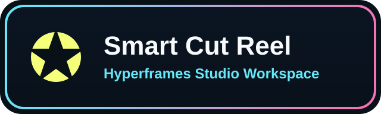

embedded studio
This workspace is only a starting shell for timeline editing, preview, and scene structure. We can replace each panel and animation with your actual brand system next.

Hero intro with clean timing and safe zones.
Ready to trim clips, drag layers, and inspect durations.
Swap in your real blocks, intros, and subtitle treatments.